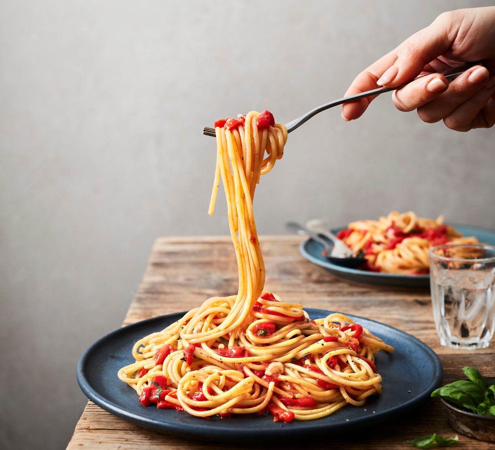

Spaghetti

Description
Spaghetti is a classic Italian pasta dish known for its long, thin noodles and rich tomato-based sauce. It's a versatile and hearty meal that's popular worldwide. This version features a savory meat sauce made with ground beef, aromatic herbs, and garlic, making it perfect for lunch or dinner.
Ingredients
- 200g spaghetti
- 300g ground beef
- 1 onion, finely chopped
- 2 cloves garlic, minced
- 1 cup tomato sauce or crushed tomatoes
- 2 tablespoons olive oil
- 1 teaspoon dried oregano
- 1 teaspoon dried basil
- Salt and pepper to taste
- Grated Parmesan cheese (optional)
Steps
- Cook the spaghetti according to the package instructions, then drain.
- Heat olive oil in a pan over medium heat.
- Sauté the chopped onion and garlic until fragrant and soft.
- Add the ground beef and cook until browned.
- Stir in the tomato sauce, oregano, basil, salt, and pepper.
- Let the sauce simmer for 15–20 minutes, stirring occasionally.
- Serve the meat sauce over the cooked spaghetti and top with Parmesan if desired.
Home